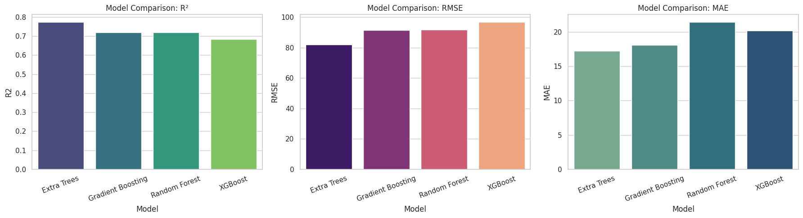
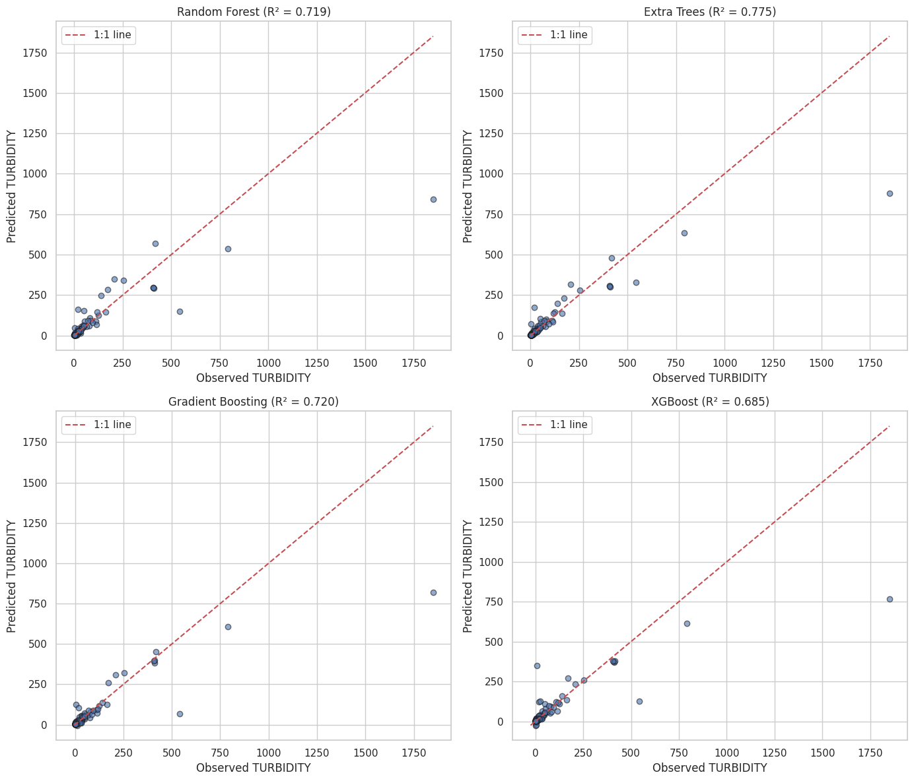
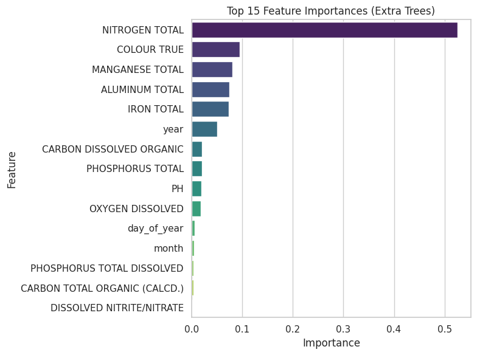
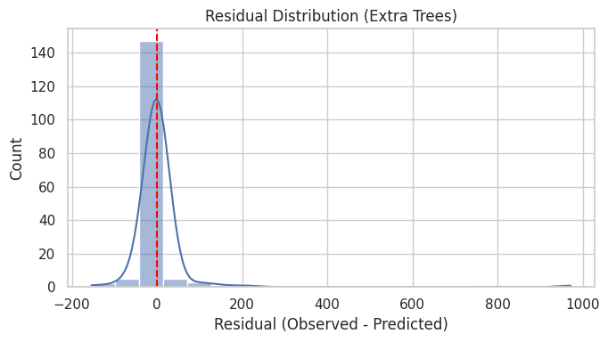

Quantifying Wildfire Impacts on Source-Water Quality: A Machine-Learning Framework
Memorial University of Newfoundland · Supervisor: Dr. Arpana Rani Datta · Team of four · Trained in Alberta's Peace–Athabasca Basin, tested in Labrador's Churchill River
Wildfires are getting larger and more severe across Canada's boreal forests, and the ash and sediment they release can reach the rivers communities drink from. This project builds a data-driven tool that predicts how wildfires degrade source-water quality and explains which factors drive the change, to give water utilities evidence for monitoring and post-fire planning.
How the model works · click each step
The problem
- 2024 wildfires near Churchill Falls, Labrador, forced evacuations and raised concerns about water-supply reliability.
- Post-fire runoff can raise turbidity, nutrients and metals, increasing treatment costs and risk.
- Utilities need to know when and why water quality shifts after a fire.
What I did
- Built a 26-year, 4-station water-quality dataset for the Peace–Athabasca Basin (Alberta), a boreal watershed hit by the 2016 Fort McMurray and 2023 fires.
- Chose turbidity as the target: it integrates sediment, colour and metals, and it is what treatment plants struggle with.
- Trained and compared Random Forest, Extra Trees, Gradient Boosting and XGBoost regressors.
- Ranked the drivers with feature importance, then tested whether the model transfers to Newfoundland's Churchill River.
Results
- Extra Trees performed best on every metric (R² = 0.775).
- Total nitrogen, colour, manganese, iron and aluminium drive turbidity, a wildfire disturbance signature.
- Transfer test: the framework carries over, but the fitted model over-predicts ~17× in Newfoundland until the local hydrology link is established.
- Findings shaped into recommendations for monitoring and water-supply protection.
Extra Trees was the best model on every metric
Four ensemble models scored on held-out test data. R² (left, higher is better) is the share of turbidity variation explained; RMSE and MAE (middle, right, lower is better) are prediction errors in NTU.

Predictions track real measurements
Each dot is a held-out water sample; dots on the red 1:1 line are perfect predictions. Extra Trees (top right) reaches R² = 0.775.

Nitrogen, colour & metals dominate
Top 15 inputs by importance in the Extra Trees model. Total nitrogen leads by about 5×, followed by colour, manganese, aluminium and iron, which is exactly what wildfire runoff carries into rivers.

Errors are small and unbiased
Residuals (observed − predicted) for Extra Trees are sharply peaked at zero; only a few extreme turbidity events sit in the tail.

The Alberta model doesn't transfer as-is
Applied directly to Newfoundland, the model over-predicts turbidity about 17×. The method transfers, but it must be retrained on local hydrology.
Figures 1–4: project results on the Peace–Athabasca dataset (823 samples, 80/20 train/test split). Figure 5: pilot transfer test on one Churchill River comparison, illustrative rather than statistical. Click any figure to open it full size.